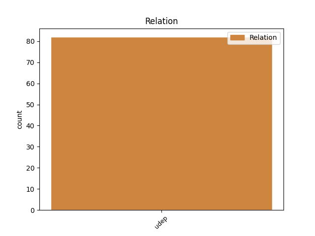
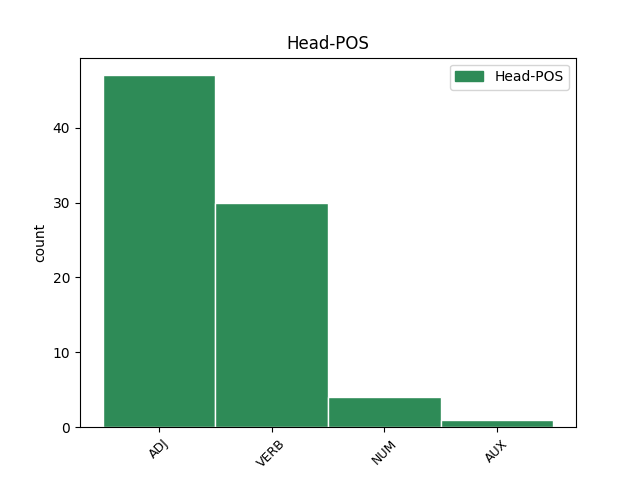
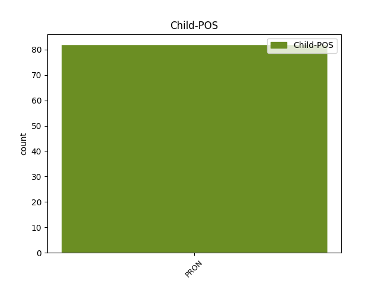

Distribution of features within this leaf



Agreement Rules sorted by frequency.
- When the dependent token is the underspecified dependency(udep) of the head token, and the dependent token is PRON.
1 و _ _ _ _ 0 _ _ _
2 قد _ _ _ _ 0 _ _ _
3 عثر _ _ _ _ 0 _ _ _
4 على _ _ _ _ 0 _ _ _
5 هؤلاء _ _ _ _ 0 _ _ _
6 و _ _ _ _ 0 _ _ _
7 ب _ _ _ _ 0 _ _ _
8 حوزة _ _ _ _ 0 _ _ _
9 هم _ _ _ _ 0 _ _ _
10 متفجرات _ _ _ _ 0 _ _ _
11 و _ _ _ _ 0 _ _ _
12 ذخيرة _ _ _ _ 0 _ _ _
13 و _ _ _ _ 0 _ _ _
14 هو هُوَ PRON SP---3MS1- Case=Nom|Gender=Masc|Number=Sing|Person=3|PronType=Prs 17 udep _ Gloss=he,it,she|LTranslit=huwa|Translit=huwa|Vform=هُوَ
15 الامر _ _ _ _ 0 _ _ _
16 الذى _ _ _ _ 0 _ _ _
17 اثار أَثَار VERB VP-A-3MS-- Aspect=Perf|Gender=Masc|Number=Sing|Person=3|Voice=Act 0 _ _ _
18 المخاوف _ _ _ _ 0 _ _ _
19 من _ _ _ _ 0 _ _ _
20 احتمال _ _ _ _ 0 _ _ _
21 ان _ _ _ _ 0 _ _ _
22 يكونوا _ _ _ _ 0 _ _ _
23 اعضاء _ _ _ _ 0 _ _ _
24 فى _ _ _ _ 0 _ _ _
25 شبكة _ _ _ _ 0 _ _ _
26 الجماعة _ _ _ _ 0 _ _ _
27 الاسلامية _ _ _ _ 0 _ _ _
28 الارهابية _ _ _ _ 0 _ _ _
29 او _ _ _ _ 0 _ _ _
30 جماعات _ _ _ _ 0 _ _ _
31 متمردة _ _ _ _ 0 _ _ _
32 اسلامية _ _ _ _ 0 _ _ _
33 فى _ _ _ _ 0 _ _ _
34 الفلبين _ _ _ _ 0 _ _ _
35 . _ _ _ _ 0 _ _ _
Disagree Examples:
1 يذكر _ _ _ _ 0 _ _ _
2 ان _ _ _ _ 0 _ _ _
3 90 _ _ _ _ 0 _ _ _
4 % _ _ _ _ 0 _ _ _
5 من _ _ _ _ 0 _ _ _
6 سكان _ _ _ _ 0 _ _ _
7 اندونيسيا _ _ _ _ 0 _ _ _
8 ( _ _ _ _ 0 _ _ _
9 210 _ _ _ _ 0 _ _ _
10 ملايين _ _ _ _ 0 _ _ _
11 نسمة _ _ _ _ 0 _ _ _
12 ) _ _ _ _ 0 _ _ _
13 من _ _ _ _ 0 _ _ _
14 المسلمين _ _ _ _ 0 _ _ _
15 ، _ _ _ _ 0 _ _ _
16 و _ _ _ _ 0 _ _ _
17 إندونيسيا _ _ _ _ 0 _ _ _
18 هي هُوَ PRON SP---3FS1- Case=Nom|Gender=Fem|Number=Sing|Person=3|PronType=Prs 19 udep _ Gloss=he,it,she|LTranslit=huwa|Translit=hiya|Vform=هِيَ
19 رابع رَابِع ADJ A-----MS1R Case=Nom|Definite=Cons|Gender=Masc|Number=Sing 0 _ _ _
20 دولة _ _ _ _ 0 _ _ _
21 في _ _ _ _ 0 _ _ _
22 العالم _ _ _ _ 0 _ _ _
23 من _ _ _ _ 0 _ _ _
24 حيث _ _ _ _ 0 _ _ _
25 كثافة _ _ _ _ 0 _ _ _
26 السكان _ _ _ _ 0 _ _ _
27 . _ _ _ _ 0 _ _ _
1 و _ _ _ _ 0 _ _ _
2 أعرب _ _ _ _ 0 _ _ _
3 بيرسول _ _ _ _ 0 _ _ _
4 عن _ _ _ _ 0 _ _ _
5 دهشة _ _ _ _ 0 _ _ _
6 ه _ _ _ _ 0 _ _ _
7 ازاء _ _ _ _ 0 _ _ _
8 تطور _ _ _ _ 0 _ _ _
9 مستوى _ _ _ _ 0 _ _ _
10 ه _ _ _ _ 0 _ _ _
11 المتواصل _ _ _ _ 0 _ _ _
12 ، _ _ _ _ 0 _ _ _
13 مشيرا _ _ _ _ 0 _ _ _
14 في _ _ _ _ 0 _ _ _
15 الوقت _ _ _ _ 0 _ _ _
16 ذات _ _ _ _ 0 _ _ _
17 ه _ _ _ _ 0 _ _ _
18 الى _ _ _ _ 0 _ _ _
19 ان _ _ _ _ 0 _ _ _
20 التجارب _ _ _ _ 0 _ _ _
21 هي هُوَ PRON SP---3FS1- Case=Nom|Gender=Fem|Number=Sing|Person=3|PronType=Prs 22 udep _ Gloss=he,it,she|LTranslit=huwa|Translit=hiya|Vform=هِيَ
22 اصعب أَصعَب ADJ A-----MS1R Case=Nom|Definite=Cons|Gender=Masc|Number=Sing 0 _ _ _
23 اللقاءات _ _ _ _ 0 _ _ _
24 . _ _ _ _ 0 _ _ _
1 و _ _ _ _ 0 _ _ _
2 قال _ _ _ _ 0 _ _ _
3 رئيس _ _ _ _ 0 _ _ _
4 الوزراء _ _ _ _ 0 _ _ _
5 في _ _ _ _ 0 _ _ _
6 تصريحات _ _ _ _ 0 _ _ _
7 مساء _ _ _ _ 0 _ _ _
8 أول _ _ _ _ 0 _ _ _
9 من _ _ _ _ 0 _ _ _
10 امس _ _ _ _ 0 _ _ _
11 إن _ _ _ _ 0 _ _ _
12 الحكومة _ _ _ _ 0 _ _ _
13 تجري _ _ _ _ 0 _ _ _
14 مراجعة _ _ _ _ 0 _ _ _
15 يومية _ _ _ _ 0 _ _ _
16 ل _ _ _ _ 0 _ _ _
17 آثار _ _ _ _ 0 _ _ _
18 الحرب _ _ _ _ 0 _ _ _
19 في _ _ _ _ 0 _ _ _
20 افغانستان _ _ _ _ 0 _ _ _
21 على _ _ _ _ 0 _ _ _
22 الاقتصاد _ _ _ _ 0 _ _ _
23 و _ _ _ _ 0 _ _ _
24 إعداد _ _ _ _ 0 _ _ _
25 تقارير _ _ _ _ 0 _ _ _
26 في _ _ _ _ 0 _ _ _
27 شأن _ _ _ _ 0 _ _ _
28 ها _ _ _ _ 0 _ _ _
29 ب _ _ _ _ 0 _ _ _
30 التعاون _ _ _ _ 0 _ _ _
31 مع _ _ _ _ 0 _ _ _
32 مؤسسات _ _ _ _ 0 _ _ _
33 دولية _ _ _ _ 0 _ _ _
34 من _ _ _ _ 0 _ _ _
35 بين _ _ _ _ 0 _ _ _
36 ها _ _ _ _ 0 _ _ _
37 صندوق _ _ _ _ 0 _ _ _
38 النقد _ _ _ _ 0 _ _ _
39 و _ _ _ _ 0 _ _ _
40 البنك _ _ _ _ 0 _ _ _
41 الدوليين _ _ _ _ 0 _ _ _
42 ، _ _ _ _ 0 _ _ _
43 و _ _ _ _ 0 _ _ _
44 يتم تَمّ VERB VIIA-3MS-- Aspect=Imp|Gender=Masc|Mood=Ind|Number=Sing|Person=3|VerbForm=Fin|Voice=Act 0 _ _ _
45 بناء _ _ _ _ 0 _ _ _
46 علي _ _ _ _ 0 _ _ _
47 ها هُوَ PRON SP---3FS2- Case=Gen|Gender=Fem|Number=Sing|Person=3|PronType=Prs 44 udep _ Gloss=he,it,she|LTranslit=huwa|Translit=hā|Vform=هَا
48 حصر _ _ _ _ 0 _ _ _
49 الاثار _ _ _ _ 0 _ _ _
50 الحالية _ _ _ _ 0 _ _ _
51 و _ _ _ _ 0 _ _ _
52 المتوقعة _ _ _ _ 0 _ _ _
53 ، _ _ _ _ 0 _ _ _
54 قدر _ _ _ _ 0 _ _ _
55 الامكان _ _ _ _ 0 _ _ _
56 ، _ _ _ _ 0 _ _ _
57 على _ _ _ _ 0 _ _ _
58 الاقتصاد _ _ _ _ 0 _ _ _
59 القومي _ _ _ _ 0 _ _ _
60 و _ _ _ _ 0 _ _ _
61 تحديد _ _ _ _ 0 _ _ _
62 الخطوات _ _ _ _ 0 _ _ _
63 اللازمة _ _ _ _ 0 _ _ _
64 ل _ _ _ _ 0 _ _ _
65 التعاطي _ _ _ _ 0 _ _ _
66 مع _ _ _ _ 0 _ _ _
67 الموقف _ _ _ _ 0 _ _ _
68 . _ _ _ _ 0 _ _ _
1 و _ _ _ _ 0 _ _ _
2 ردا _ _ _ _ 0 _ _ _
3 على _ _ _ _ 0 _ _ _
4 سؤال _ _ _ _ 0 _ _ _
5 قال _ _ _ _ 0 _ _ _
6 السنيورة _ _ _ _ 0 _ _ _
7 : _ _ _ _ 0 _ _ _
8 " _ _ _ _ 0 _ _ _
9 صحيح _ _ _ _ 0 _ _ _
10 ان _ _ _ _ 0 _ _ _
11 صندوق _ _ _ _ 0 _ _ _
12 النقد _ _ _ _ 0 _ _ _
13 الدولي _ _ _ _ 0 _ _ _
14 فشل _ _ _ _ 0 _ _ _
15 في _ _ _ _ 0 _ _ _
16 بعض _ _ _ _ 0 _ _ _
17 الدول _ _ _ _ 0 _ _ _
18 الا _ _ _ _ 0 _ _ _
19 أن _ _ _ _ 0 _ _ _
20 ه هُوَ PRON SP---3MS4- Case=Acc|Gender=Masc|Number=Sing|Person=3|PronType=Prs 22 udep _ Gloss=he,it,she|LTranslit=huwa|Translit=hu|Vform=هُ
21 لا _ _ _ _ 0 _ _ _
22 تزال زَال VERB VIIA-3FS-- Aspect=Imp|Gender=Fem|Mood=Ind|Number=Sing|Person=3|VerbForm=Fin|Voice=Act 0 _ _ _
23 لدي _ _ _ _ 0 _ _ _
24 ه _ _ _ _ 0 _ _ _
25 سمعة _ _ _ _ 0 _ _ _
26 في _ _ _ _ 0 _ _ _
27 العالم _ _ _ _ 0 _ _ _
28 ل _ _ _ _ 0 _ _ _
29 ما _ _ _ _ 0 _ _ _
30 يملك _ _ _ _ 0 _ _ _
31 ه _ _ _ _ 0 _ _ _
32 من _ _ _ _ 0 _ _ _
33 جوانب _ _ _ _ 0 _ _ _
34 علمية _ _ _ _ 0 _ _ _
35 سياسية _ _ _ _ 0 _ _ _
36 ايضاً _ _ _ _ 0 _ _ _
37 ، _ _ _ _ 0 _ _ _
38 و _ _ _ _ 0 _ _ _
39 ب _ _ _ _ 0 _ _ _
40 النسبة _ _ _ _ 0 _ _ _
41 إلي _ _ _ _ 0 _ _ _
42 نا _ _ _ _ 0 _ _ _
43 نحن _ _ _ _ 0 _ _ _
44 بلد _ _ _ _ 0 _ _ _
45 صغير _ _ _ _ 0 _ _ _
46 و _ _ _ _ 0 _ _ _
47 لا _ _ _ _ 0 _ _ _
48 نريد _ _ _ _ 0 _ _ _
49 الذهاب _ _ _ _ 0 _ _ _
50 بين _ _ _ _ 0 _ _ _
51 سنابك _ _ _ _ 0 _ _ _
52 الخيل _ _ _ _ 0 _ _ _
53 ، _ _ _ _ 0 _ _ _
54 نعرف _ _ _ _ 0 _ _ _
55 حدود _ _ _ _ 0 _ _ _
56 نا _ _ _ _ 0 _ _ _
57 نريد _ _ _ _ 0 _ _ _
58 الحوار _ _ _ _ 0 _ _ _
59 مع _ _ _ _ 0 _ _ _
60 الجميع _ _ _ _ 0 _ _ _
61 و _ _ _ _ 0 _ _ _
62 لٰكن _ _ _ _ 0 _ _ _
63 وفق _ _ _ _ 0 _ _ _
64 ما _ _ _ _ 0 _ _ _
65 تقتضي _ _ _ _ 0 _ _ _
66 ه _ _ _ _ 0 _ _ _
67 مصلحة _ _ _ _ 0 _ _ _
68 نا _ _ _ _ 0 _ _ _
69 فقط _ _ _ _ 0 _ _ _
70 و _ _ _ _ 0 _ _ _
71 التي _ _ _ _ 0 _ _ _
72 هي _ _ _ _ 0 _ _ _
73 اولوية _ _ _ _ 0 _ _ _
74 ب _ _ _ _ 0 _ _ _
75 النسبة _ _ _ _ 0 _ _ _
76 إلي _ _ _ _ 0 _ _ _
77 نا _ _ _ _ 0 _ _ _
78 " _ _ _ _ 0 _ _ _
79 . _ _ _ _ 0 _ _ _
1 ذكرت _ _ _ _ 0 _ _ _
2 دراسة _ _ _ _ 0 _ _ _
3 قانونية _ _ _ _ 0 _ _ _
4 حديثة _ _ _ _ 0 _ _ _
5 أن _ _ _ _ 0 _ _ _
6 التشريعات _ _ _ _ 0 _ _ _
7 الاقتصادية _ _ _ _ 0 _ _ _
8 هي هُوَ PRON SP---3FS1- Case=Nom|Gender=Fem|Number=Sing|Person=3|PronType=Prs 9 udep _ Gloss=he,it,she|LTranslit=huwa|Translit=hiya|Vform=هِيَ
9 الأكثر أَكثَر ADJ A-----MS1D Case=Nom|Definite=Def|Gender=Masc|Number=Sing 0 _ _ _
10 عدداً _ _ _ _ 0 _ _ _
11 في _ _ _ _ 0 _ _ _
12 تاريخ _ _ _ _ 0 _ _ _
13 مصر _ _ _ _ 0 _ _ _
14 الحديث _ _ _ _ 0 _ _ _
15 ، _ _ _ _ 0 _ _ _
16 مشيرة _ _ _ _ 0 _ _ _
17 إلى _ _ _ _ 0 _ _ _
18 أن _ _ _ _ 0 _ _ _
19 ها _ _ _ _ 0 _ _ _
20 بلغت _ _ _ _ 0 _ _ _
21 نحو _ _ _ _ 0 _ _ _
22 30 _ _ _ _ 0 _ _ _
23 ألف _ _ _ _ 0 _ _ _
24 تشريع _ _ _ _ 0 _ _ _
25 منذ _ _ _ _ 0 _ _ _
26 عام _ _ _ _ 0 _ _ _
27 1928 _ _ _ _ 0 _ _ _
28 إلى _ _ _ _ 0 _ _ _
29 اليوم _ _ _ _ 0 _ _ _
30 . _ _ _ _ 0 _ _ _